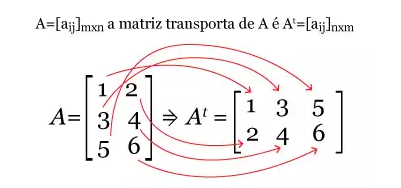

MATRIZ TRANSPOSTA
É obtida por meio da troca de elementos da linha pela coluna
Define-se como matriz transposta uma matriz qualquer resultante da troca ordenada das linhas pelas colunas de uma matriz chamada de original.
Matematicamente, uma transposta de uma matriz é representada por: A = At.
Antes, porém, é preciso compreender o conceito de matrizes. Em regra geral, uma matriz é definida como termos e simbologias matemáticas organizadas
dentro de uma tabela, agrupados em linhas e colunas de uma maneira que viabiliza a realização de cálculos simultâneos, seja a multiplicação, soma, subtração,
dentre outras operações matemáticas.
Toda e qualquer matriz tem o formato representado por m x n (leia-se: m por n), em que “m” é o número de linhas e “n” o número de colunas de cada uma delas.
Considerando que uma matriz A = [aij] m x n, sendo esta uma operação qualquer de matriz, chama-se de transposta de A a matriz At = [aij] n x m,
em que At é obtida a partir de “A”, uma matriz principal fazendo a troca das linhas pelas colunas.
Dada a definição, pode-se perceber na explicação que houve a troca de "n" por "m" na matriz transposta. Ou seja, os elementos dispostos nas linhas de uma
matriz foram organizados na coluna da matriz originada após as substituições, chamada de transposta.
Em que:
- i é a posição dos elementos da linha da matriz
- j é a posição dos elementos na coluna
- aij é a representação dos elementos dispostos em linhas e colunas
- m é o número de linhas que fazem parte da matriz
- n é o número de colunas que fazem parte da matriz
- At é a representação da transposta de A
--> Exemplo: na imagem abaixo há uma representação de matriz com a substituição dos seus elementos numéricos. Considere a matriz A, então At é:
No exemplo anterior, a matriz A é uma matriz de ordem 3x2, ou seja, possui 3 linhas e duas colunas.
Dessa forma, a matriz transposta At terá ordem 2x3 (inversa), 2 linhas e 3 colunas após a troca.
Matriz Transposta: características e propriedades
Considera-se A e B matrizes com elementos pertencentes aos números reais, sejam as características:
--> (A+B)t = At + Bt: a matriz transposta da soma das matrizes A e B é igual a soma da transposta de A com a transposta de B.
--> (a.A)t = a . At: a transposta da multiplicação de um número real qualquer pela matriz A é igual ao produto de A pela transposta de A.
--> (At)t = A: a transposta da transposta de A tem como resultado a própria matriz A, chamada de matriz original.
--> (A.B)t = Bt . At: no caso da multiplicação de matrizes, a transposta da multiplicação da matriz A pela matriz B é igual ao resultado fornecido da transposta de B pela transposta de A.
--> det(A) = det (At): o determinante da original é igual ao determinante da transposta.